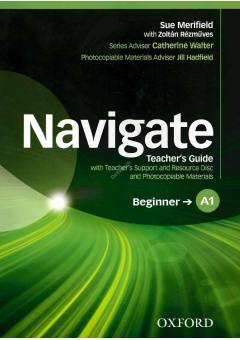

NAA1 darajadagi ingliz tili o'qituvchilari uchun darslik va metodik qo'llanma.
Ushbu o'qituvchi uchun qo'llanma boshlang'ich A1 darajadagi ingliz tili darslarini samarali tashkil etish uchun mo'ljallangan. Kitobda dars rejalari, qo'shimcha resurslar, testlar va o'qitish metodikasi bo'yicha batafsil ko'rsatmalar berilgan.